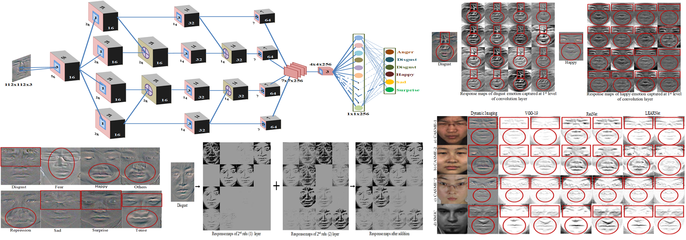
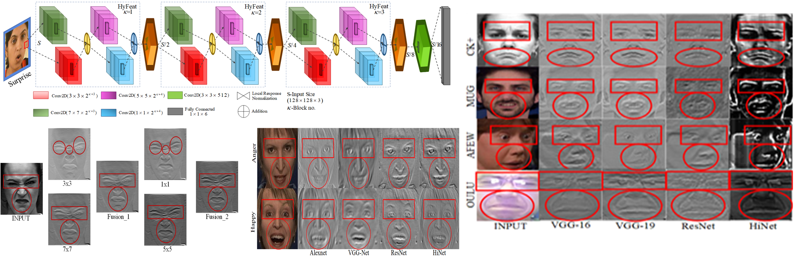

Facial Expression Recognition
Research objective is to develop an
artificially intelligent human behavioral assessment
system to analyze emotions using visual
data which can be easily collected through various sensory
mediums. Our focus is to develop deep learning
architecture suitable for detecting
micro level information from the facial appearances.
PROJECTS
Micro Expression Recognition using LearNet

Facial Expression Recognition Using HiNet

Facial Expression Recognition Using ExpertNet
Facial Expression Recognition Using QUEST Discriptor
Facial Expression Recognition Using ReTrain Discriptor